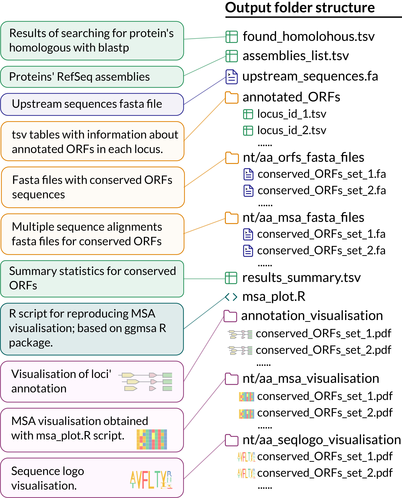

Example-driven guide
Here we present several examples of uorf4u command-line version usage and the respective command-line parameters.
This chapter based on the considering of well-known uORFs that are known as translation and transcription regulators (see review articles: Ito et.al. 2013 and Dever et.al. 2020).
Before start: The necessary sample data as well as adjustable tool' configuration files are provided by uorf4u at the post-install step:
uorf4u --data
If you work on a Linux machine after installation you should run: uorf4u --linux
This command replaces the tools paths (maft, muscle) in the pre-made config files from the MacOS' version (default) to the Linux'.
Prokaryotes: vmlR
'Prokaryotic' example in our guide is based on recently described and extremely short uORF of antibiotic resistance gene vmlR. In this case, antibiotic-induced ribosome stalling during translation of an upstream open reading frame in the vmlR leader region prevents formation of an anti-antiterminator structure, leading to the formation of an antiterminator structure that prevents intrinsic termination. For the details see article Takada et. al., 2022.

To test whether uorf4u will be able to find this uORF we can use only the accession number of Vmlr protein as input! The searching results for Vmlr in the NCBI protein database gives us the RefSeq id: WP_024026878.1 that can be used for our command:
uorf4u -an WP_024026878.1 -bh 500 -bpid 0.7 -ul 300 -mna 1 -fast -c prokaryotes -o Vmlr
What do all these arguments mean? 🤔
All arguments, except -an, are optional and were used in this example for demonstration and retrieving a larger set of homologues.
-bh parameter overrides the max number of blastp hits in homology search [default: 200]. -bpid updates the cutoff for sequence identity between a hit and the query [default: 0.5]. With -ul parameter we can specify length of upstream regions to retrieve [default: 1000]. -mna parameter the most tricky here: it's used to limit the number of assemblies taken in the analysis from the NCBI identical protein database. If there are more sequences in which a protein is annotated than we specified then random sampling will be used to take only a subset of them. -fast argument activates the fast searching algorithm which is quite used for a big set of sequences (>~400). To set a path or name of a pre-made configuration file we use -c parameter. By default the tool uses 'prokaryotes' pre-made file, in this example we used it to make it clear. Output folder dir can be set with -o [by default it's uorf4u_{current_data} e.g. uorf4u_2022_08_09-15_00].
The results will be saved to the Vmlr folder with the following structure:

The uORF was annotated in 450 upstream sequences of 453 identify homologous genes. Let's have a look at the respective amino acid sequence logo and annotation plot (only few sequences of the output figure is shown below for the annotation plot). Fortunately, we found that we expected. 🥳

Eukaryotes: ATF4
The scanning mechanism is the key difference in eukaryotic translation initiation from prokaryotic where ribosome binds directly to the SD sequence near a start codon. Usually, eukaryotic uORFs' regulation based on scanning ribosome stop mechanism that blocks the downstream ORF translation or on reinitiation efficacy[see reviews cited above for details].
One of the well-known cases of such regulation is translation regulation of stress-related transcription factor ATF4. The ATF4 mRNA contains two uORFs, the first one is extremely short and located at a distance ~200nt from the ATF4 main ORF (mORF), while the second one is overlapped with mORF. Under normal conditions, ribosome reinitiates on the second uORF resulting in inhibitory of the mORF. Under stress condition with phosphorylated eIF2alpha and low eIF2-GTP level a ribosome during scanning after first termination in uORF1 usually pasts uORF2 and reinitiates on ATF4 mORF start codon. A protein encoded by ATF4 mORF under stress conditions then can change transcription profile of a wide range of adaptive genes.
Only few changes in the analysis pipeline are needed to handle eukaryotic analysis properly: 1. We shouldn't filter annotated uORFs by SD sequence presence. 2. While sequences retrieving for found homologues we should take only mRNAs (the tool uses regex to perform that, refseq_sequences_regex in the config files. For eukaryotes it's set as '^[NX]M_.*' that means that only sequences with ids that start with NM_ or XM_ (mRNAs) will be taken in the analysis.)
You don't need to set up it manually, as it was mentioned before, uORF4u has two pre-made configuration files named prokaryotes and eukaryotes. All you need is just to tell the tool that you're analysing eukaryotic protein(s). 😉
Finally, let's have a look at the command and results:
uorf4u -an NP_877962.1 -bh 500 -mna 1 -c eukaryotes -o ATF4
All arguments used here were already described above.
The uORF1 and uORF2 were annotated in 272 and 285 upstream sequences, repspectively. The nucleotide sequence logo of the uORF1 and a small subset of sequences from the annotation plot are shown below: